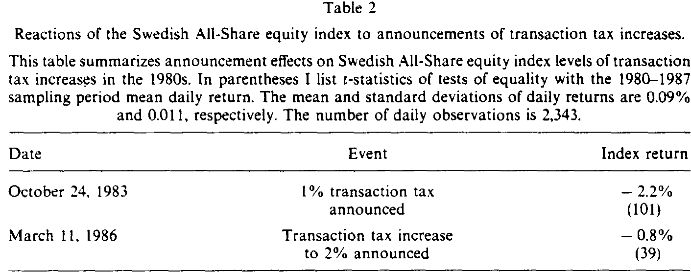
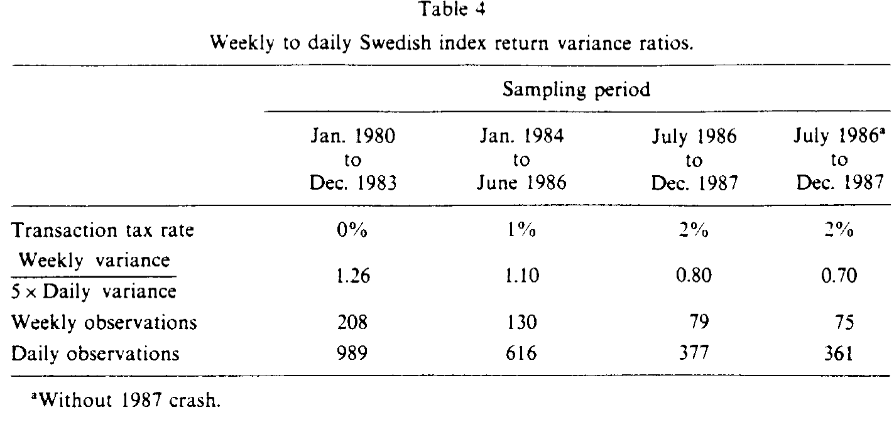
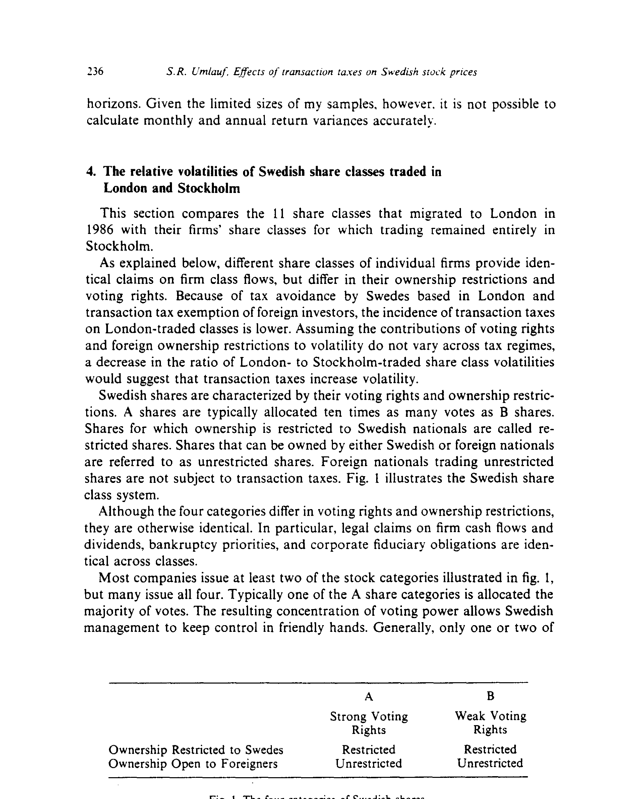
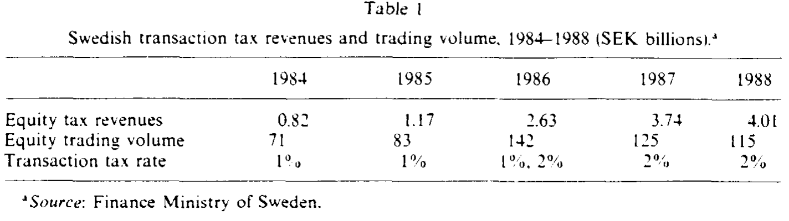
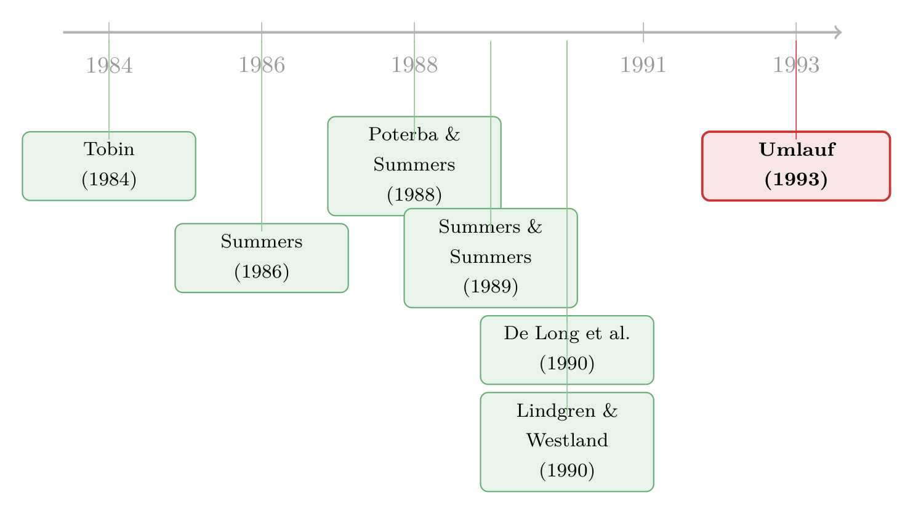

把『沙子』撒进股市的齿轮：瑞典交易税的一场天然实验
本文读的是 Umlauf (1993, Journal of Financial Economics)：作者把 1980 年代的瑞典当成一座「实验室」，用 1980（无税）→ 1984（1%）→ 1986（2%）三段税制，检验一个被争论了几十年的命题——给股票交易征税，到底能不能像托宾设想的那样「往齿轮里撒沙子」、压住市场的过度波动。结论很扎心：波动率一点没降，股价却应声大跌，等到税率提到 2%，11 只最活跃股票里 60% 的成交量直接搬去了伦敦。换句话说，这把「沙子」没卡住投机，倒是把交易本身赶跑了。
1 引言：一场没有结论的争吵
关于「要不要对金融交易征税」，经济学界吵了很久，而且吵得很凶。
一边是 Summers 和 Summers (1989) 这样的人。他们借用 James Tobin 的那句名言，主张征收证券交易税 (securities transaction excise tax, STET) 是为了「往我们这台过分灵光的金融市场的齿轮里撒一把沙子 (throwing 'sand into the gears')」——既能筹钱，又能把资源从膨胀的金融部门挤回更有生产力的实体部门，还能消灭那些「降低福利的波动」。听上去几乎是三全其美。
另一边则是 Grundfest (1990) 这样的反对者。他写得毫不客气：这种税「很可能摧毁掉美国金融市场的一部分，肥了外国竞争者，抬高美国公司的资本成本，压低美国股价，伤害小投资者，并且加剧资本市场的波动」。
你看，争论的双方对同一件事给出了方向完全相反的预言。一方说征税能降波动，一方说征税会升波动。问题在于——理论本身并没有给出干净的零假设和备择假设，谁也说服不了谁。这场争论缺的不是口才，而是证据。
于是，本文作者做了一件很「临床 (clinical)」的事：他不想再搭一个新理论，他只想为这场辩论提供一个真实的数据点。而这个数据点，他在瑞典找到了。
2 为什么是瑞典？——识别的全部秘密
要用一段历史去检验「征税的效果」，最怕的是什么？最怕这税本身就是冲着市场波动来的。如果监管者恰好在市场最疯的时候加税，那你事后看到的「高税 + 高波动」，到底是税导致了波动，还是波动招来了税？这就是经典的内生性 (endogeneity) 难题。
而瑞典的妙处，恰恰在于它的税和股市的死活毫无关系。
首先，看这税是怎么来的。1980 年代初，瑞典金融业急速膨胀，年轻金融从业者拿着旁人眼里「不合理」的高薪，这在一个高度看重收入平等的社会里激起了劳工部门 (labor sector) 的强烈不满。1983 年初，劳工部门的代表提议对瑞典的各类交易活动征税。尽管财政部和金融界一致反对，议会还是在 1984 年 1 月 1 日开征了一篮子金融交易税，其中就包括对股票交易征收 1% 的往返税 (round-trip tax)——买入征 0.5%、卖出再征 0.5%。两年后，劳工部门再度施压，2% 的税率于 1986 年 7 月 1 日落地。
关键就在这里：征税的首要动机是政治上安抚劳工，而不是去削减股市波动。降波动这件事，只是被「顺带」当作托宾式论据提了一嘴，从来不是立法的主要考量。因此，从实验的角度看，这些税可以被视为外生的 (exogenous)。
这就是这篇论文识别策略的全部基石：税率的变化不是市场状态的函数，而是政治博弈的产物。于是作者得到了一个近乎天然实验 (natural experiment) 的设定——三个税制区间（0%、1%、2%），跨区间比较股市行为，就能逼近「税的因果效应」。没有花哨的工具变量，没有双重差分的平行趋势检验，靠的就是制度本身制造出来的这道缝隙。
数据上，作者用的是斯德哥尔摩经济学院提供的、1980–1987 年瑞典 All-Share 股票指数的连续复利日收益与周收益。这个指数覆盖了 SSE 所有挂牌股票（场外交易除外）。有一个小遗憾：他拿不到指数的股息收益率数据，所以收益序列只含资本利得部分。但瑞典的股息发放高度集中在 4 月中到 5 月底那六周里，把这段窗口剔掉后结果几乎不变，所以这个缺口并不致命。
3 第一击：股价应声而落
最先跳出来的结果，是宣告效应 (announcement effect)。
1983 年 10 月 24 日，1% 税被宣布的当天，指数跌了 −2.2%。这个跌幅有多夸张？拿它和整个 1980–1987 样本期 0.09% 的日均收益去做相等性检验，t 值高达 101（样本期日收益的标准差是 0.011，样本量 2,343）。1986 年 3 月 11 日宣布把税提到 2% 那天，指数跌了 −0.8%，t 值也有 39。

Table 2
如表 2 所示，这两次都是干净利落的负向冲击。而且作者提醒，这些数字很可能还低估了真实跌幅——因为市场参与者多半早就嗅到了加税的可能。一个佐证是：在 1% 税正式宣布前的那 30 天里，指数的累计收益其实已经是 −5.3%，暗示着消息提前泄露了。
那么，跌这么多，合理吗？ 这里作者插入了一段很漂亮的「信封背面」算术，把这笔税资本化 (capitalize) 了。他假设投资者预期未来年换手率永远是 27%（这正是样本期的平均换手率），再假设永续的股息收益率是 4%（瑞典样本期的平均值）。在这些假设下 Gordon 增长模型成立，一笔永续税负的资本化价值，就等于「预期年税额 ÷ 股息收益率」：
也就是说，理论上引入 1% 的税「应该」让指数下跌约 6.75%。而现实中 1984 年那个月 −5.3% 的累计跌幅，和这个数字非常吻合。6.75% 是个上界（投资者多半预见到将来会避税、会减少换手），所以实测略低于它，完全说得通。
作者很坦诚：这套假设「确实非常强」。换一个更保守的算法——把永续税负 0.27 × 0.01 用 15% 的年要求回报去贴现——新税和加税的资本化代价都只有 1.8%。所以这段算术给出的不是一个精确点估计，而是一个量级上的「合理性体检」。
4 真正的反转：波动率，纹丝不动
宣告效应只是开胃菜。这篇论文真正的分量，落在那个让 Summers 们尴尬的问题上：征税之后，波动率降了吗？
答案是：没有。
接着，一个更微妙的问题浮现出来。作者比较了三个税制区间里、周收益与日收益的方差。如果把 1987 年 10 月那场全球股灾的窗口（10 月 15 日–11 月 7 日）从 2% 区间里剔掉，各区间的周方差几乎没有差别，统计上也不显著（用的是正态分布方差相等的似然比检验，统计量服从卡方(2) 分布）。日方差倒是在 2% 区间里最大，且跨区间差异显著——但这恰恰说明，高税期的波动不降反升，与「撒沙降波动」的预言南辕北辙。
然后，是这篇文章里我最喜欢的那一步。作者去看了一个更精细的量：周方差与「5 倍日方差」之比。
为什么是这个比值？因为如果收益服从随机游走 (random walk)，那么周方差就该恰好等于 5 个交易日方差之和，这个比值应当等于 1。比值大于 1，意味着收益里有正自相关；比值小于 1，则意味着负自相关。

Table 4
如表 4 所示，这个比值随税率一路下滑：0% 区间是 1.26，1% 区间降到 1.10，2% 区间跌到 0.80（剔除股灾后更低，到 0.70）。也就是说，税率越高，日收益里的负自相关越强。
这个结果之所以「反直觉」，是因为高税期里不交易 (nontrading) 的情形更多，而不交易本该制造正自相关——你会预期价格更「黏」、更容易延续。可数据偏偏给出了相反的方向，负自相关强到足以把不交易带来的正自相关完全盖过。
怎么解释？作者给了两条互相竞争的故事，但都没有下定论：
- 其一，税在价格里注入了噪声 (noise)。 这些噪声推高了日收益的方差，又在一周左右的投资期里靠向基本面的均值回归被消化掉——于是日频负自相关、周频却平稳。
- 其二，税抑制了正反馈交易 (positive feedback trading)，也就是 De Long, Shleifer, Summers, and Waldman (1990) 笔下那种「涨了就追、跌了就抛」的追涨杀跌。正反馈交易在短期制造正自相关、长期制造负自相关；税若压住了这群「随大流」的投机者，就会让方差比下降。
这里藏着一个对文献的尖锐叩问：同一个结果，两个主流模型给出了相反的解读。Summers (1986) 与 Poterba and Summers (1988) 的「时尚 (fads)」模型预言税会减少负自相关；而 De Long et al. (1990) 的正反馈模型预言税会增加负自相关。瑞典的数据站在了后者一边，却也因此把前者推到了墙角。在没有一个完整设定的模型之前，方差比的结果是开放的——但它至少说明，这个领域缺的是预言更精确的模型。
为了排除「会不会只是这几年基本面本身更动荡」的担忧，作者还把瑞典的方差除以同期 NYSE 价值加权指数和伦敦 FTSE 全股指数的方差做了归一化（见原文表 5）。结论依旧含糊，但有一点是确定的：没有任何迹象表明税降低了波动。
5 把波动「逼」出来的证据：伦敦 vs. 斯德哥尔摩
到这里，论文其实可以收尾了。但作者还埋了一个更巧妙的对照，而它几乎是整篇文章里最有说服力的一击。
故事要从瑞典独特的股份结构讲起。瑞典的股票按投票权和所有权限制分成四类：A 股通常拥有 B 股十倍的投票权；只能由瑞典国民持有的叫「限制股 (restricted shares)」，可由外国人持有的叫「非限制股 (unrestricted shares)」。

Figure 1: The four categories of Swedish shares
如图 1 所示，这四类股票在投票权和所有权上各不相同，但在对公司现金流的法定索取权、股息、破产清偿顺序、公司受托义务上完全一致。这是关键：它们是同一家公司、对同一份现金流的几乎相同的索取权，只在交易税的「税负归宿」上有差别。
为什么税负会不同？因为外国投资者交易非限制股不缴交易税，加上常驻伦敦的瑞典人通过设立「人造英国公司」来避税。于是当 1986 年税率提到 2%，那 11 只最活跃股票的成交量有 60% 直接迁去了伦敦——按斯德哥尔摩交易所首席经济学家的估计，这部分迁走的量占了当时全瑞典股票交易的 30% 以上；到 1990 年，在伦敦交易的瑞典股票成交占比已经超过 50%。
这就给了作者一个近乎完美的对照实验。同一家公司，伦敦交易的那一类股和斯德哥尔摩交易的那一类股，除了投票权和所有权限制，只差在交易税的轻重。如果 Summers 们是对的（税降波动），那么 1986 年加税后，税负更轻的伦敦类股的波动率，应该相对斯德哥尔摩类股上升——换言之，「伦敦 / 斯德哥尔摩」的标准差之比应该变大。
结果恰恰相反：伴随成交向伦敦迁移，伦敦类股的波动率相对其斯德哥尔摩同门下降了。在其他条件大体相同的前提下，这意味着——税越重，波动越大。
（关于「外国人能不能买、能买哪一类股」如何把同一家公司的股票劈成两个价格、两种波动，可参见《同一只股票，外国人偏要多付一成——泰国「外资板」里的市场分割》。）
6 没人算的那笔账：税收的副作用
最后，作者顺手记下了几笔「副作用」，每一笔都像是给「撒沙派」的回旋镖。

Table 1
如表 1 所示，交易税收入从 1984 年的 SEK 9.2 亿一路涨到 1988 年的 SEK 40 亿出头（SEK/USD 汇率五年间平均约 10.5）。表面上看，政府是赚了。可作者指出，这账根本不能这么算：
- 资本利得税收入大幅缩水。 成交量被税压垮，资本利得税收入跌得太多，几乎把交易税多收的那部分完全抵消掉了。
- 债券市场遭到重创。 瑞典政府债券（同样被征税）的交易萎缩得极其严重，以至于债券交易税最终被取消。
- 利率期权市场直接蒸发。 一上税，这个市场就没了。
Lindgren and Westland (1990) 也研究了瑞典的情况，记录了交易量的剧烈萎缩，并估出换手率对税率的弹性在 0.85 到 1.35 之间——他们据此认为样本末期 2% 的税率高到连税收最大化都做不到了。这与本文的图景完全一致：那把撒进齿轮的沙子，最终卡住的不是投机者，而是市场本身。
（如果你关心交易税到底有没有让价格「更聪明」这条更现代的线索，可参见《给市场收一笔「降噪费」：交易税真能让价格更聪明吗？》；而关于个人层面的税如何干净地定价进股价，则可参见《个人税，悄悄定价了你的股票——一个来自伦敦 AIM 的干净实验》。）
7 文献脉络
把这篇论文放回它的时代，它其实站在两条研究线的交叉口。
一条线是政策与规范之争。源头是 Tobin (1984)——他主张金融体系「效率过剩」，提议用税往齿轮里撒沙。沿着这条线，Summers and Summers (1989) 把托宾的直觉系统化为支持 STET 的「谨慎理由」，而 Grundfest (1990) 则在《华尔街日报》上猛烈反击。这条线吵的是「应不应该」。
另一条线是关于价格如何形成的实证与理论。Summers (1986) 和 Poterba and Summers (1988) 提出「时尚 / 均值回归」的视角，认为价格会系统性偏离基本面；而 De Long, Shleifer, Summers, and Waldman (1990) 则给出了正反馈交易这一相反机制下的「破坏性理性投机」。这条线问的是「到底发生了什么」。

本文 Umlauf (1993) 的位置，是用瑞典这个外生的天然实验，同时回应了这两条线：对第一条线，它给出了「撒沙派」最不想看到的证据——波动没降、股价下跌、交易外逃；对第二条线，它用方差比的方向，把两个竞争模型放到了对立面上检验，并意外地为 De Long et al. (1990) 提供了一个间接的旁证。与它最接近的同行 Lindgren and Westland (1990) 记录了成交量的崩塌，但作者特意点明：「他们没有做本文里的任何一个实验。」——这句话，基本就是本文的边界与贡献。
评论与延伸（Q&A + 研究方向）
(a) 几个可能的疑问
Q：作者一口咬定税是「外生的」，这个假设到底可不可信？
大体可信，但要打折看。可信，是因为加税的政治动机（安抚劳工）确实独立于股市波动状态，这把最致命的「监管盯着波动加税」的内生性挡在了门外。要打折，是因为「外生于波动」不等于「外生于一切」：1984 年的 1% 税是和一揽子预算（含遗产税临时上调、一系列削减开支）一起宣布的。作者查了文献，认为遗产税大概率引发负面反应、而削支信号偏正面，二者方向相反、部分抵消；2% 那次则没有伴随其他实质性公告。所以宣告效应大概率是税本身的，但 1984 那次并非纯净。
Q：波动率「没下降」，会不会只是因为样本期里基本面本身更动荡？
这正是作者用表 5 想堵的漏洞——把瑞典方差除以 NYSE 和 FTSE 的同期方差做归一化。归一化后的结论依旧含糊（周频、日频在不同区间互有高低），但没有任何一种切法能切出「税降低了波动」。换句话说，即便扣掉全球基本面的共同波动，结论也不反转。
Q：那个 t = 101 是不是好得有点离谱？
数字上没错，但要理解它的来源。它检验的是「单日 −2.2% 的收益」与「样本期日均 0.09%」是否相等，分母用的是日收益标准差 0.011 除以样本量的根号。当你拿单日的极端跌幅去对全样本均值做检验、且样本量有 2,343 时，t 值天然会非常大。它说明这个跌幅在统计上极不可能是噪声，但不该被读成「精确到小数点后两位的因果点估计」。
Q：方差比下降，到底证明了「噪声」还是「压住了正反馈交易」？
作者诚实地说：分不清。两个机制都能产生「日频负自相关增强」：要么是税注入噪声、再被周频均值回归吃掉；要么是税掐死了追涨杀跌的正反馈交易者。数据只能告诉你方向（负自相关变强），不能告诉你机制。这也正是文章反复强调的——这个领域缺的是预言更精确的模型，而不是更多的相关性。
Q：伦敦 vs. 斯德哥尔摩的对照，最大的硬伤在哪？
在数据。作者其实拿不到这 11 只股票在伦敦交易所的日 / 周收益，他用的是斯德哥尔摩交易所的价格来代表「伦敦类股」——理由是套利会把两地同时点价差压在交易成本和税负界定的区间内（他还非正式地比对了 Volvo、Saab 等几只股票的两地价格，发现差异极小）。这个替代假设大体合理，但它把「伦敦的真实波动」换成了「斯德哥尔摩里那部分仍留在本地的约 40% 成交的波动」，严格说是个近似。
Q：这篇文章对今天的「金融交易税 (FTT)」辩论还有用吗？
有用，但要清楚它的定位。作者自己说得很谦虚：这是为辩论「创造一个数据点」的临床研究，不是要一锤定音。它最强的证据是「交易外逃」——2% 的税把 60% 的活跃成交赶去了伦敦。在一个资本可以自由流动、且存在低税交易中心的世界里，这条「迁移」的逻辑至今没有过时。
(b) 几个可能的研究问题与提案
1. 把同一套「税负差 = 波动差」的对照搬到公司债市场。
【经济故事】瑞典股票被劈成税负不同的四类，给了作者一个天然对照。公司债市场里也有类似的结构：同一发行人的不同券种、在岸 vs. 离岸（如美元债 vs. 欧洲债）、被纳入与未被纳入某项交易税 / 印花税覆盖的债。如果某项针对债券二级交易的税或费只覆盖一部分券，就能复制 Umlauf 的「同一现金流、不同税负」识别。 【可行性】中。识别干净，但数据是瓶颈——需要同一发行人跨市场、跨券种的逐笔成交（TRACE 只覆盖美国、且不含离岸）。若能找到一次只覆盖部分券的税改事件，doable；否则偏难。
2. 外资持有人作为「税迁移」的载体：谁先跑、谁留下？
【经济故事】本文里迁去伦敦的 11 只股票，全是非限制股、外资可持有，且 9 只是 B 股（弱投票权）。这暗示外资持有人比例可能是交易外逃的关键预测变量——税一来，最不在乎投票权、又享受免税的外资先走。可以把「迁移倾向」回归到事前的外资持股比例、投票权结构、流动性上。 【可行性】高（针对瑞典这段历史）。需要 1980 年代瑞典个股的外资持股与股份类别数据，斯德哥尔摩经济学院和当年的交易所档案大概率可得；识别用的是 1986 税改这个外生冲击。是本文一个自然且 doable 的延伸。
3. 交易税与流动性的「方向性」：税压垮的是哪一类成交？
【经济故事】本文用周 / 日方差比间接推断「不交易增多」和「负自相关增强」，但没有逐笔数据去看究竟是谁停止了交易——是高频投机者，还是基本面投资者？现代微观结构数据可以把成交按规模、按主动 / 被动拆开，直接观察税后哪一类订单流萎缩得最厉害。 【可行性】中。瑞典 1980 年代没有这种细粒度数据，但可换战场：用某个开征 / 调整交易税的现代市场（如法国 2012 FTT、意大利 2013 FTT）的逐笔订单簿，做同样的「哪类成交被税赶走」分析。数据可得性是主要约束，识别相对清晰。
4. 把「资本利得税收入被抵消」做成一个完整的财政账。
【经济故事】本文最被忽略的一句话是：交易税多收的钱，几乎被资本利得税的缩水完全抵消。这其实是一个可量化的拉弗曲线 (Laffer curve) 故事——交易税不仅有直接的成交弹性（Lindgren-Westland 估的 0.85–1.35），还有跨税种的负外部性。把两条税收路径合并建模，能给「FTT 到底能不能筹到钱」这个政策问题一个更诚实的答案。 【可行性】中到低。需要瑞典财政部分税种的收入序列与换手率数据，部分在本文表 1 已有；难点在于把资本利得税收入的反事实（没有交易税时会是多少）识别出来，需要结构假设。理论清晰，实证偏难。
参考文献
De Long, J. Bradford, Andrei Shleifer, Lawrence Summers, and Robert Waldman (1990). Positive feedback investment strategies and destabilizing rational speculation. Journal of Finance 45(2), 379–396.
Grundfest, Joseph (1990). The damning facts of a new stocks tax. Wall Street Journal, July 23rd.
Lindgren, Ragnar, and Anders Westland (1990). Transaction costs, trading volume and price volatility on the Stockholm Stock Exchange. Skandinaviska Enskilda Banken Quarterly Review 2, 30–35.
Poterba, James, and Lawrence Summers (1988). Mean reversion in stock prices: Evidence and implications. Journal of Financial Economics 25(1), 27–59.
Summers, Lawrence (1986). Does the stock market rationally reflect fundamental values? Journal of Finance 41(3), 591–601.
Summers, Lawrence, and Victoria Summers (1989). When financial markets work too well: A cautious case for a securities transaction tax. Journal of Financial Services Research 3, 261–286.
Tobin, James (1984). On the efficiency of the financial system. Lloyds Bank Review 153, 1–15.
Umlauf, Steven R. (1993). Transaction taxes and the behavior of the Swedish stock market. Journal of Financial Economics 33(2), 227–240.